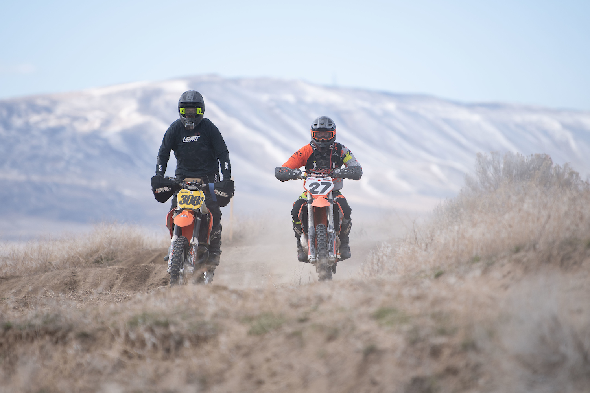
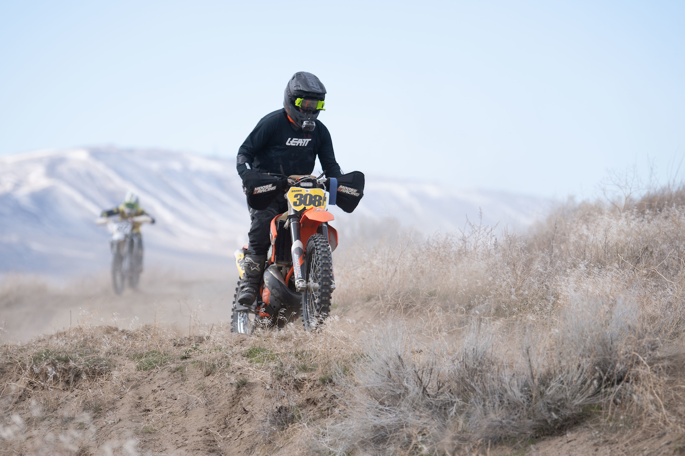
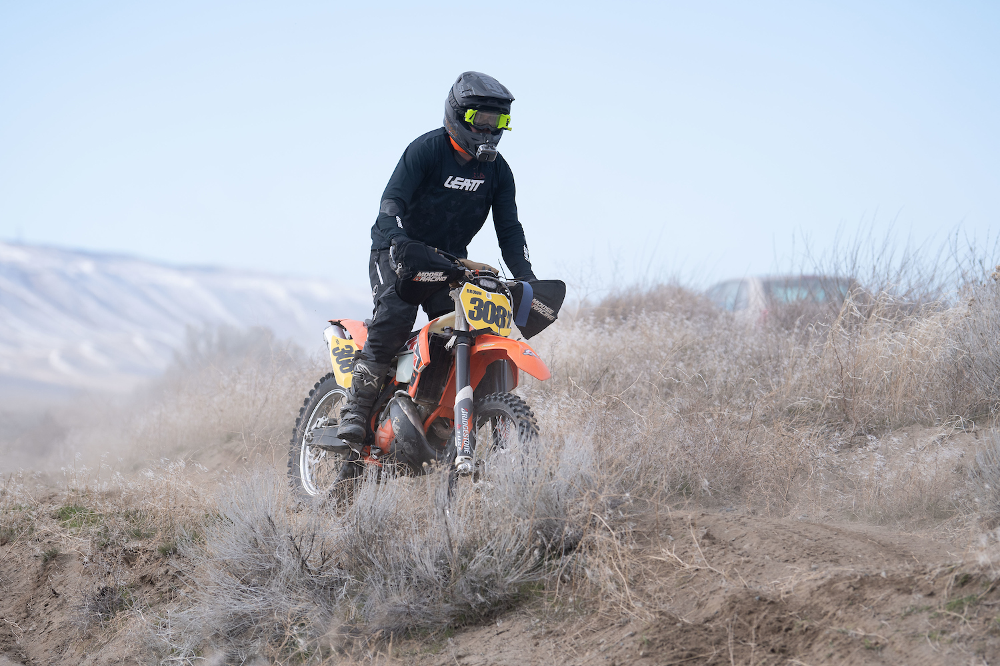

2023 - NMA OFFROAD Rnd 1
Published 2023-03-11
Horn Rapids


sporting new gear from my Leatt partnership
As always, this race was a mix of fun and misery. I've likely only rode in deep sand for 10 hours total. I waddled a rented WR250 with bald DOT knobbies across a silt bed in Jean Roach, NV a few years ago and rode Saddle Mountain in Mattawa, Wa once. So its an understatement that this was a really difficult time. The MX track at the end of the lap was also extremely difficult for me. Despite feeling like I was the slowest rider out there, I still managed to squeeze in a finish before 8 other riders. 17th of 25 in Vet C.
2023 EWDRA Hare Scramble Results

images courtesy of www.photosbysteve.com